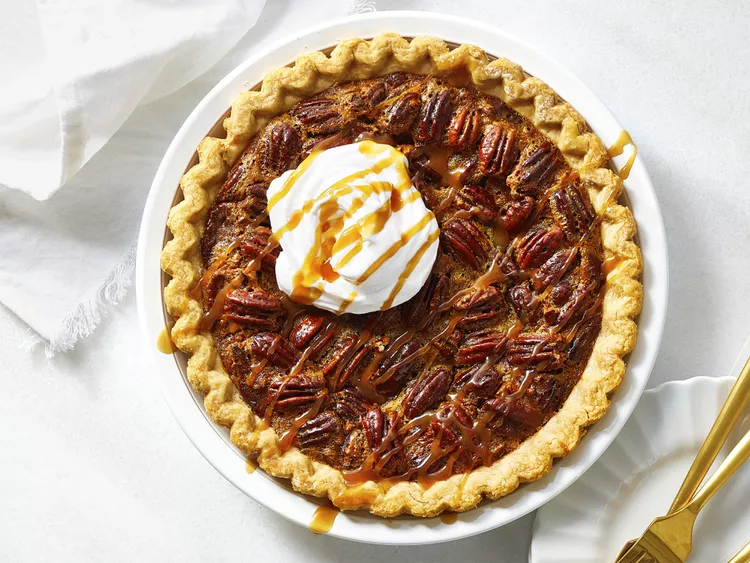

Caramel Pecan Pie
This caramel pecan pie is an impossibly decadent twist on a classic holiday dessert.
Ingredients
1 (9 inch) unbaked pie crust
36 individually wrapped caramels, unwrapped
¼ cup unsalted butter
¼ cup milk
¾ cup white sugar
3 large eggs
½ teaspoon vanilla extract
¼ teaspoon salt
1 cup pecan halves
Steps
Gather all ingredients. Preheat the oven to 350 degrees F (175 degrees C.)
Combine caramels, butter, and milk in a saucepan over low heat. Cook, stirring frequently, until caramels are melted and mixture is smooth, 10 to 15 minutes. Remove from the heat and set aside.
Mix together sugar, eggs, vanilla, and salt in a large bowl. Gradually mix in the melted caramel mixture, then stir in pecans. Pour filling into unbaked pie crust.
Stir in butter, eggs, and almond extract. Bake in the preheated oven until pastry is golden brown, 45 to 50 minutes. Remove from the oven and let set on a wire rack until filling is firm, about 15 minutes. Serve warm or cold.
